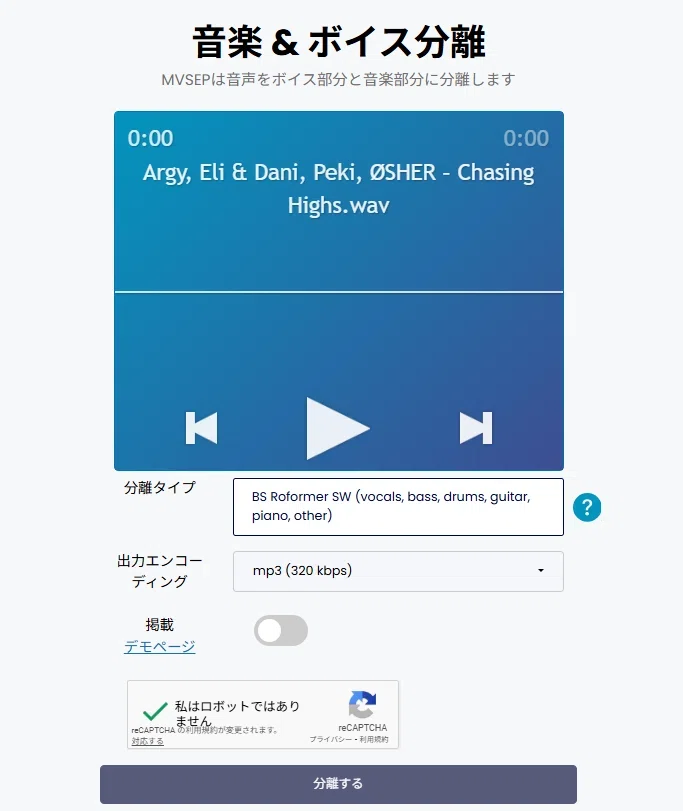
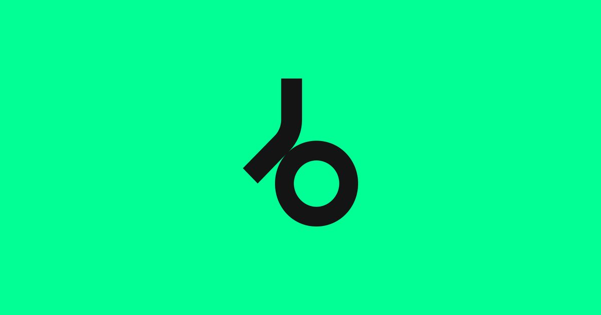
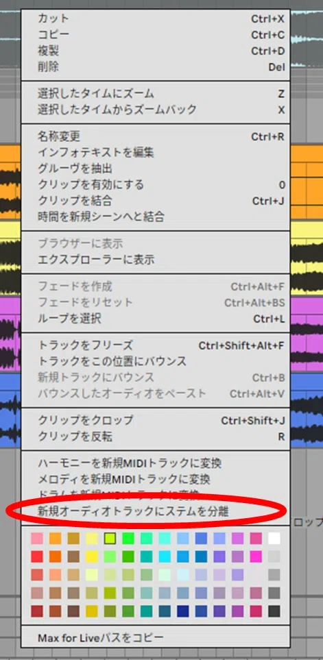
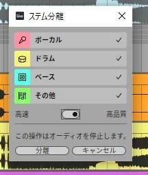

STEP1-1で、
あなたはここまで来た。
- 楽曲の“解剖図”（5要素）を理解した
- 感情で、たった1曲のレファレンスを選んだ
- BPM / Key を写し、構成を小節単位で書き出した
ここまでで、もう“なんとなく作る”状態は卒業です。
ただし ── ここで、次の壁にぶつかります。
耳だけで聴いていても、レファレンスの“本当の中身”は見えません。
キックが戻る瞬間。ベースの動き。ブレイクの空気感。ドロップ前の熱量の作り方。
これらは ── ステムを見ない限り、絶対に分かりません。
だから、STEP1-2では レファレンス曲を“AIで丸裸にする”工程に入ります。
耳だけで分析する時代は、
もう終わりです。
Ears Aren't Enough Anymore
今のDTMは、もう耳だけで分析する時代ではありません。
Ears Only ── 耳だけだと
こうなります
- キックが戻る瞬間が わからない
- ベースの動きの“正体”が 聴き取れない
- ブレイクの空気感を 何が作っているか不明
- ドロップ前の熱量の作り方が 見えない
With Stems ── ステムで見ると
こうなります
- 低域の出入りが 波形で見える
- ベースの倍音まで 抽出できる
- 空気のレイヤーが 丸裸になる
- ドロップ前のFXが 帯域単位で読める
結果、耳だけだと“なんとなく似せた曲”で止まってしまいます。 ステムを見れば、プロの“設計図”が、視覚と聴覚の両方で理解できるようになります。
AIステム分離は、“耳だけ”から“視覚 + 聴覚”へ ── 解析の次元を変える技術です。
この STEP でやってほしいこと
Two Things To Do
STEP1-2でやることは、たった2つ。
AIで4トラックに分解する
Drums / Bass / Vocals / Others。Abletonか、MVSepのどちらか。
DAWに並べて聴き比べる
4ステムを横に並べて、出入りと帯域を、波形で読む。
たった2手順で、レファレンスは“丸裸”になります。
あなたが取るべき“ルート”は、これです。
Two Paths, One Goal
ステム分離のツールは複数ありますが、結論はシンプルです。
MVSep（Web版）
ブラウザだけで完結。インストール不要、無料。高品質モデルが選べる。
Ableton Stems
DAW内蔵で完結。高音質モードが本命。上モノの抜けは、これが最強。
どちらのルートでも、ゴールは同じ ── “プロの設計図”を手に入れること。
ちなみに私自身は、Moises から入りました
正直に話します。
私が「Prayer」を制作した当時、最初に使ったツールは Moises でした。 4トラック分解（Drums / Bass / Vocals / Others）が手軽で、初心者でも扱いやすく、Prayerの構造の8割はこれで掴めました。
この記事を書くために徹底比較したところ、MVSep の方が、ボーカルの透明度・FXの立ち上がり・サイド成分の残り方、すべてで Moises を上回っていました。 上モノの“金属的な成分”や“空気感”の残り方が、まるで別物でした。
そして Ableton Stems の高音質モードは、その MVSep をさらに超えてきました。
だから、あなたには遠回りをさせません。最初から、MVSep か Ableton Stems で入ってください。 Moisesに触る必要はありません。
どのくらい違うのか、実際に聴き比べる
どのくらい違うのか知りたい方のために、比較動画を置いておきます。ご参考までに。
Moises と MVSep の Splitter 機能比較 ── 上モノの残り方の違いに注目してください。
MVSep ── 誰でもできる、本命ルート
The Standard Path ── For Everyone
MVSep（Web版）で4ステムに分解する
公式Webサイトに直接アクセスして使うタイプで、インストール不要、ブラウザだけで完結します。
無料モデルでも品質はかなり高い。有名なAIコンペで上位を獲った高性能モデルを選べる。 音質の“崩れ方”が少なく、自然です。
Drums / Bass / Vocals / Others ── これだけで曲の“骨格”が手に入ります。
Abletonをお持ちでない方は、迷わずこれ一択でOKです。
たった5ステップで、4ステムが手に入ります

MVSepの操作画面を置いてください
可能であれば Beatport の Extended Mix を使ってください。 構成がフルで入っているので、解析の精度が最大化されます。
研究・学習において、これほど価値のある音源は他にありません。
※ Beatportに無ければ iTunes など他サイトでも構いません。

Source ── 解析用の音源を買う Beatport｜DJ & Electronic Dance Music 世界最大のDJストア。Extended Mix は構成がフルで入っているため、解析の精度が最大になる。 www.beatport.com5ステップ ── これだけで、レファレンスを“波形レベル”で読めるようになります。
Abletonをお持ちなら、
これ一択。
For Ableton Users ── The Best Path
Ableton Stems で分解する
正直に言います ── 私は実際に、Moises / MVSep / Ableton Stems の3つを同じ曲で聴き比べました。
その結果、特に差が出たのは3点です。
- ボーカルのクリアさ
- 低音の分離
- そして何より、高音域がクリアに、はっきり残ること
MVSepでも十分すごい。ですが、Ableton Stems は上モノの“気持ちよさ”が一番潰れにくい。 つまり、分析したときに“プロの質感”が一番そのまま残ります。
お持ちなら、迷わずこれを使ってください。
① 操作手順 ── 4ステップ
楽曲を貼り付ける
DAWにレファレンスの楽曲を貼り付ける。
右クリック
右クリックでメニューを開く。
ステムを分離
「新規オーディオトラックにステムを分離」をクリック。
4ステム全選択
デフォルトでOK → 分離を実行。
これだけで、Vocals / Drums / Bass / Others が個別トラックとして自動展開されます。

Ableton の操作画面を置いてください
②「高音質モード」を必ず選んでください
Ableton Live のステム分離には、モードが2つあります。
- 高速モード ── 速いが、質が落ちる
- 高音質モード ── 約30分かかる
使うべきは “高音質モード”一択です。
確かに時間がかかります。だいたい30分ほど待たされます。でも、それを待つだけの価値があります。
なぜなら、あなたが今やっているのは「素材作り」ではなく、レファレンス解析＝プロの設計図を読む作業だからです。 ここで音が潰れていたら、分析の精度もズレます。
30分待つ。その代わり、トッププロの“本物の質感”を、より正確に耳に入れる。 これが、Ableton Live 使用者が取れる最短ルートです。

モード選択画面を置いてください
DAWに並べて、
何十回も聴き比べる
Listen Side By Side ── Until You See The Blueprint
4ステムをDAWに並べて、解析する
ステムを分離して終わり、ではありません。ここからが、本当の“解析”です。
4ステムと元のフル音源を、DAWに横並びで貼り付ける。何十回も聴き比べる ── これが、設計図を読む作業です。
私が「Prayer」を作ったときも、これを徹底的にやりました。 分解した各ステムと、元のフル音源を、Ableton Live に横並びで貼り付けて、何十回も聴き比べました。
すると ──
- ベースがどこで抜け、ドロップでどう戻るか
- ドロップ前にFXの高域がどれだけ持ち上がっているか
- ブレイクのロー成分をどこまで削っているか
- キックのアタックがどの帯域に集中しているか
- Others内の“空気のレイヤー”がどれくらい薄いか
正直、この工程だけで Prayer の“骨格”の8割は見えました。
ステム分離は、“分けて終わり”ではなく、“並べて聴く”までが本番です。
各ステムで、聴くべきポイント
Four Stems ── Four Lenses
① DRUMS ── リズムの魂
Drums- キックの長さ・太さ・アタック
- ハットの刻みは8分なのか16分なのか
- パーカッションの位置
- スイングがどれくらい入っているか
② BASS ── 緩急の正体
Bass- サブベースが入る“瞬間”
- ブレイクでローエンドをどこまで抜いているか
- 16分刻みなのか、ロングトーンなのか
- アタック強め？ 弱め？
- トップベースの動き、倍音の抜け
③ VOCALS ── 世界観の作り方
Vocals- 芯の位置と高域ハーモニクス
- ダブ（L/R広げ）の使い方
- ディレイ・リバーブの量とタイミング
- 低音のレイヤーを足しているか
④ OTHERS ── 一番おもしろい部分
Melody / FX / Air- 隠しスタブ（極小ワンショット）
- 独特なドラムフィル
- FX（スウィープ・ライザー・ノイズ）
- アンビエンスのレイヤー
- パッドの上下動
ドラムのステムを solo にすると、その曲のリズムの魂がそのまま見えます。 文章では絶対に伝わらない“本物のノリ”が、ここで一気に理解できます。
ベース単体のステムは、正直 ── 宝物です。 曲の“ドラマ”は、ほぼベースの動きで決まります。ステム分離は、その動きを全部見せてくれます。
そして Others が、一番おもしろい。 「あ、この曲こんなに細かく積んでたんだ…」と必ず驚くはずです。
4ステム × 4視点 ── これが、レファレンスを丸裸にする解像度です。
STEP1 全体の本質
“闇雲な手探り”の制作から、
▼
“設計図のある”制作へ、切り替わる。
ここまでやり切ったあなたは、もう「とりあえずキック置いてみるか…」という手探りDTMから卒業しています。
- レファレンスという“地図”
- 構成という“道筋”
- ステム分析という“設計図”
この3つを持った状態で、キック・ベース・グルーヴ・シンセ・ミックスへと進むだけです。
STEP 1 ── 全体のクリア条件
次の4つが揃っていれば、STEP1全体（1-1 + 1-2）はクリアです。
4つすべてクリアです。いよいよ STEP2 ──“音を作るフェーズ”に進めます。
不安があれば ── ラボ専用LINEへ。レファレンスや構成、ステム解析の質問は遠慮なく送ってください。
STEP1完走者限定特典
先輩たちの REAL CASES
STEP1を完走したあなたへ、特典記事をお渡しします。
- 「自分のレファレンス選びは、本当にこれで合っているのか？」
- 「自分が書いた構成メモは、的を外していないか？」
実際にロードマップを受講した先輩6人の“リアルなレファレンス分析”を、生のままで公開しています。
NOBさん
Tech House × Ableton Live × DTM歴3ヶ月
STEP 7 進行中ジジさん
メロディック系（同人音楽）× FL Studio × 完全初心者からスタート
STEP 1〜10 完走うさださん
テクノ / ミニマル × Bitwig Studio × DAW初体験
STEP 3 進行中やすさん
Melodic Techno × Ableton Live × 触ったり触らなかったり
STEP 1〜10 完走Eternal Fieldさん
トランス × Ableton Live × DTM歴3年
楽曲リリース済みDAnさん
テクノ × Ableton Live × DTM歴1年未満・ビデオコンサル有
STEP 2 進行中
ジャンルも、DAWも、DTM歴も違う6人。でも全員に共通していたのは ──
「最初は不安なまま、それでも提出した」こと。
そして全員が、STEP2以降にしっかり進んでいます。
特典記事は、これからも順次追加されていきます。 あなたが STEP1 を完走した時、もしかしたら CASE 07 として登場する側に回るかもしれません。
STEP1 完走者限定特典 先輩たちのREAL CASES 受講生のレファレンス分析を、生のままで公開。順次更新中。 特典ファイルを読む
ラボ専用LINEで
「STEP1完了しました」の報告を
── ここまで来たあなたへ
ここまで本当にお疲れ様でした。STEP1（1-1 + 1-2）まで終えたら、ぜひラボ専用LINEで報告してください。
- このレファレンスで合っているか不安
- 構成の切り方が正しいかわからない
- ステム分離の精度に疑問
- Drums / Bass / Vocals / Others の聴き分けポイントが分からない
遠慮なく送ってください。必要であれば、構成・ステム解析について具体的にアドバイスします。
【STEP1完了報告】レファレンス + ステム解析 アーティスト名： 曲名： BPM： Key： URL（ストリーミングサイトのリンク または YouTube）： 使用ツール： MVSep / Ableton Stems 構成のメモ → できた / サポート依頼 ステム聴き比べ → 完了 / 質問あり
構成のメモやステム解析が「途中まで」「自信がない」「合っているか分からない」という状態でも問題ありません。 むしろ、そのほうが的確なアドバイスができます。
そして何より ──「STEP1まで完了しました」の一言だけでも、ぜひ送ってください。
キックとベース、
曲の“土台”を作る
From Loop to Track
次はいよいよ、STEP2 ── From Loop to Track。
あなたが STEP1 で手に入れたレファレンスと曲の設計図をもとに、私が実際にやっている手順そのままで解説します。
キックの選び方
プロが必ず確認している Click / Body / Tail の見極め方。
ベースとの噛み合い
サブとトップを設計する。
4小節の基準
選んだキックを4小節に落とし込み、“曲の土台”を確定する。
このSTEPを越えると、あなたの曲は“なんとなくのループ”ではなく、 リリース前提の“本物のローエンド”を持ち始めます。
海外プロも当たり前に実践している“キックから始める正しい作り方”を身につければ、 あなたの制作スピードと完成率は驚くほど上がります。
ここから、いよいよ“音を作るフェーズ”に入っていきましょう。
押すとHUBの進捗％に反映されます。